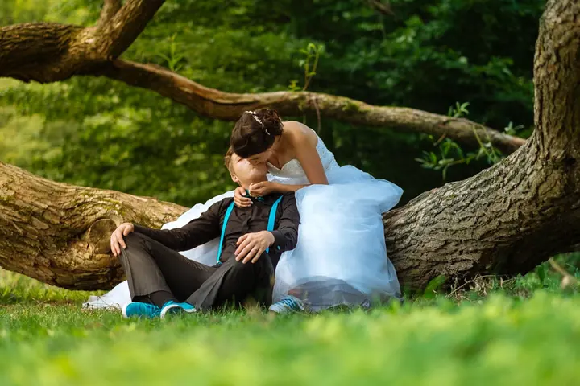
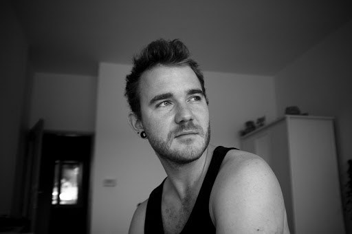

01 / 03
Svatby
Svatbu fotím s chutí a s nadhledem, od obřadu přes legrační chvíle s hosty až po společné focení. Při focení míchám staré techniky s novými postupy.
Zeptat se na termín→


Svatby, které vás budou bavit
Zeptat se na termín →(01) Ahoj
Jmenuji se Tomáš Javorek a jsem portrétní a svatební fotograf pro Brno, Uničov a celou republiku . Fotím svatby , portréty i reklamu a při focení rád míchám staré techniky s novými postupy . Dělám to, co mě baví, a stejně přistoupím i k vaší svatbě.
(02) Co fotím
01 / 03
Svatbu fotím s chutí a s nadhledem, od obřadu přes legrační chvíle s hosty až po společné focení. Při focení míchám staré techniky s novými postupy.
Zeptat se na termín→Dále nabízím
(04) Postup
Od první zprávy po hotovou galerii.
Krok 1 z 4
Na focení se objednáváte e-mailem na info@atelijer.cz. Pošlete mi termín, místo a pár slov o tom, co plánujete.
Krok 2 z 4
Projdeme spolu, jak má den nebo focení vypadat, a co je pro vás důležité. Klidně mi řekněte i nápady, které se vám zdají šílené.
Krok 3 z 4
Fotím s chutí a s nadhledem. Hledám neobvyklé úhly i chvíle, kdy se všichni smějí.
Krok 4 z 4
Fotky vyberu a upravím tak, aby z nich byla cítit atmosféra vašeho dne, a pošlu vám je.

Všechno jde, když tím žijete.
(05) Za objektivem
Když se chcete něčím živit na vlastní triko, musí vám to nejen jít, ale hlavně vás to musí bavit. Já jsem se fotit naučil právě díky tomu, jak mě to bavilo. Začínal jsem u portrétů, pak přišly svatby a nakonec komerční fotografie, s občasnými odbočkami k cestovním reportům.
Inspiraci hledám v přírodě, umění, filmu a v kreativní práci (nejen) ostatních fotografů. Při focení míchám staré techniky s novými postupy, takže se nebojím položit foťák do trávy, vlézt do limuzíny nebo vyfotit svatbu z kolotoče.
O focení jsem se díky tomu všemu naučil jednu věc: všechno jde, když tím žijete. A tak přistoupím k čemukoliv, s čím za mnou přijdete.

Tomáš
Tomáš Javorek · Svatební a portrétní fotograf
Jsem doma v Brně a v Uničově, ale fotím po celé České republice.
Nejlépe e-mailem na info@atelijer.cz. Napište mi termín a místo a já se vám ozvu.
Ne. Fotím také portréty a komerční a reklamní zakázky, občas i cestovní reporty.
Inspiruje mě příroda, umění a film. Míchám staré techniky s novými postupy a rád hledám neobvyklé úhly a uvolněné, veselé chvíle.
(07) Kontakt
Napište pár vět o tom, co si představujete, a termín, který se vám hodí.